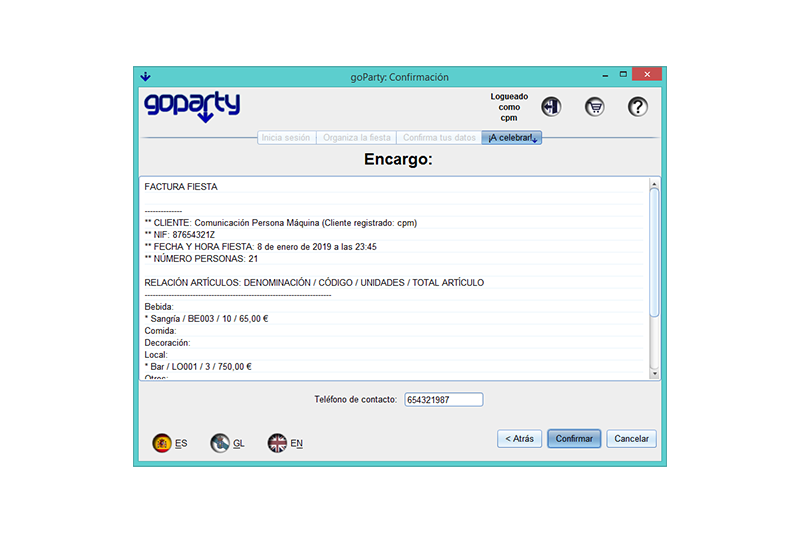

El último paso para organizar tu fiesta es simplemente confirmar que todo es correcto, a esta ventana se llega tras proporcionar los datos necesarios en la pestaña de selección de artículos para la fiesta. La ventana de confirmación te muestra la factura de tu pedido y el teléfono de contacto proporcionado en caso de haberlo hecho. Si todo está correcto pulsando el botón Confirmar podrás hacer efectivo el pedido.
Cuando le des a confirmar se te ofrecerá la posibilidad de generar una copia de la factura, si le das a Sí se habría un selector de archivos que te permitirá elegir en que lugar de tu PC quieres guardar la factura.
Tras confirmar el pedido, hayas generado copia de la factura o no, se cerrará la sesión que habías abierto y el programa regresará al punto inicial preparado para que se pueda realizar de nuevo el proceso por ti o por cualquier otro usuario.